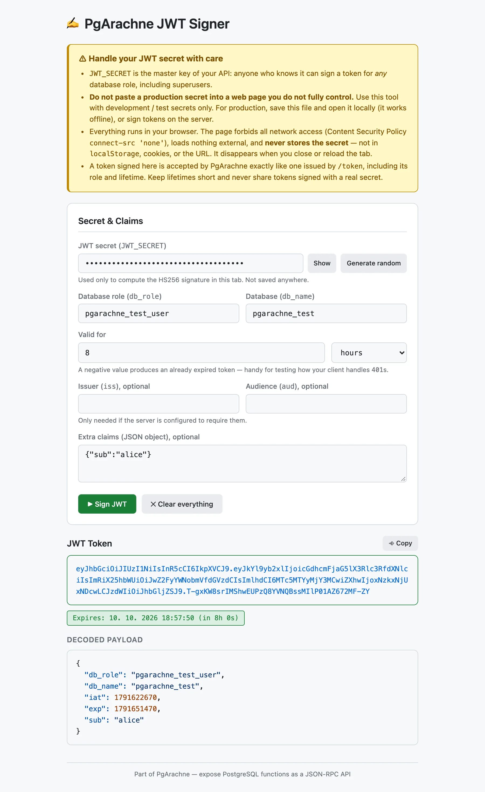

JWT Signer
JWT Signer
Το JWT Signer είναι ένα εργαλείο προγράμματος περιήγησης σε ένα αρχείο, στο tools/jwt-signer. Σε αντίθεση με το JWT Getter, δεν επικοινωνεί ποτέ με το PgArachne ή τη βάση δεδομένων: εισάγετε χειροκίνητα το JWT_SECRET και το token υπογράφεται (HS256) απευθείας στο πρόγραμμα περιήγησής σας.
Διαδικτυακή έκδοση: jwt-signer.pgarachne.com

Χειριστείτε το μυστικό JWT με προσοχή
- Το
JWT_SECRETείναι το κύριο κλειδί του API σας: όποιος το γνωρίζει μπορεί να υπογράψει token για οποιονδήποτε ρόλο βάσης δεδομένων, ακόμη και για superuser. - Ποτέ μην επικολλάτε μυστικό παραγωγής σε ιστοσελίδα που δεν ελέγχετε πλήρως. Χρησιμοποιήστε τη φιλοξενούμενη έκδοση μόνο με μυστικά ανάπτυξης/δοκιμών. Στην παραγωγή αποθηκεύστε το
index.htmlκαι ανοίξτε το τοπικά (λειτουργεί εκτός σύνδεσης) ή υπογράψτε τα token στον διακομιστή. - Όλα εκτελούνται στο πρόγραμμα περιήγησής σας. Η σελίδα απαγορεύει κάθε πρόσβαση στο δίκτυο (Content Security Policy
connect-src 'none'), δεν φορτώνει εξωτερικούς πόρους και δεν αποθηκεύει ποτέ το μυστικό — ούτε στοlocalStorage, ούτε σε cookies, ούτε στο URL. Θυμάται μόνο ρόλο, βάση, διάρκεια, issuer και audience. - Ένα token που υπογράφεται εδώ γίνεται δεκτό από το PgArachne ακριβώς όπως ένα token από το
/token. Επιλέξτε μικρή διάρκεια και μην μοιράζεστε ποτέ token υπογεγραμμένα με πραγματικό μυστικό.
Πότε να το χρησιμοποιήσετε
- Ανάπτυξη και δοκιμές όταν δεν θέλετε (ή δεν μπορείτε) να συνδεθείτε με κωδικό της βάσης δεδομένων.
- Έλεγχος του πώς χειρίζεται ο πελάτης σας τη λήξη: αρνητική διάρκεια παράγει ήδη ληγμένο token.
- Δοκιμή
iss/audκαι πρόσθετων claims σε διακομιστή που τα απαιτεί. - Δημιουργία τυχαίου μυστικού 256 bit για νέο
JWT_SECRETμε ένα κλικ.
Πώς να το ενεργοποιήσετε: Ορίστε το
STATIC_FILES_PATH σε tools/jwt-signer και επισκεφθείτε το http://localhost:8080, ή ανοίξτε το index.html απευθείας στο πρόγραμμα περιήγησης — λειτουργεί χωρίς διακομιστή.